Drawing polygons
Contents
Drawing polygons#
As well as being able to draw lines on a raster display we also need to be able to draw polygons. Drawing polygons can be achieved using one of two approaches, we can either draw the outline of the polygon using line drawing algorithms and then fill in all of the pixels inside the polygon or just draw the polygon, including the pixels in the interior, all at once. A successful method should produce a filled polygon with no holes in the interior of the polygon, i.e., all pixels that are contained within a polygon should be illuminated using the desired colour. These notes discuss two algorithms that use each of these approaches: the flood fill algorithm and the scanline fill algorithm.
Flood fill algorithm#
The flood fill algorithm is used to fill a polygon that has been rendered on a raster array using the line drawing algorithms. Given the position of a starting pixel \((x_0,y_0)\) that is known to be in the interior of the polygon, the flood fill algorithm illuminates that pixel and moves to a neighbouring pixel either to the east, west, north or south direction. At each pixel, a check is performed to see whether the pixel requires illuminating. A pixel is only illuminated if its current colour is the same as a \(target\) colour. If the pixel is to be illuminated then its colour is set to that of the \(replacement\) colour and the process is restarted using an adjacent pixel.
To keep track of the pixels that need to be considered a LIFO (Last In First Out) queue is used. The queue (also known as a stack) is initialised so that it only contains the starting pixel \((x_0,y_0)\). At each iteration of the method the last pixel in the queue is removed and is checked to see if the current colour of the pixel is the same as the target colour. If it is then this the pixel is plotted using the replacement colour and the four neighbouring pixels to the right, left, bottom and top are added onto the end of the queue. This continues until the queue is empty.
Algorithm 10 (Flood fill algorithm)
Inputs A raster array \(R\), pixel co-ordinates of the starting pixel \((x_0, y_0)\) the target colour \(target\) and the replacement colour \(replacement\).
Output A raster array \(R\).
Initialise \(Q \gets (x_0, y_0)\) (\(Q\) is a list or array)
While \(Q\) is not empty do
Remove the last pixel in \(Q\) and store the co-ordinates in \(x\) and \(y\)
If \(R(x, y) = target\) then
\(R(x, y) \gets replacement\)
Append pixels \((x+1, y)\), \((x - 1, y)\), \((x, y+1)\) and \((x, y-1)\) to \(Q\)
Return \(R\)
Example 41
Starting with the pixel at \((4, 4)\), use the flood fill algorithm to fill in the polygon on the raster below where the target colour is white and the replacement colour is blue.
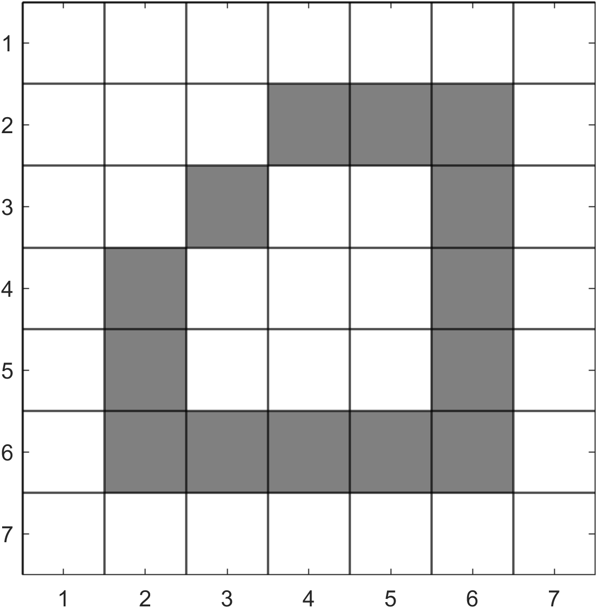
Solution
We begin by initialising the queue to contain the starting pixel
We remove this pixel from the queue and check the current colour is the same as the target colour, which it is so we fill this pixel (as indicated by the blue text in \(Q\) above) and append the pixels to the right, left, bottom and top of pixel \((4,4)\) to the queue.
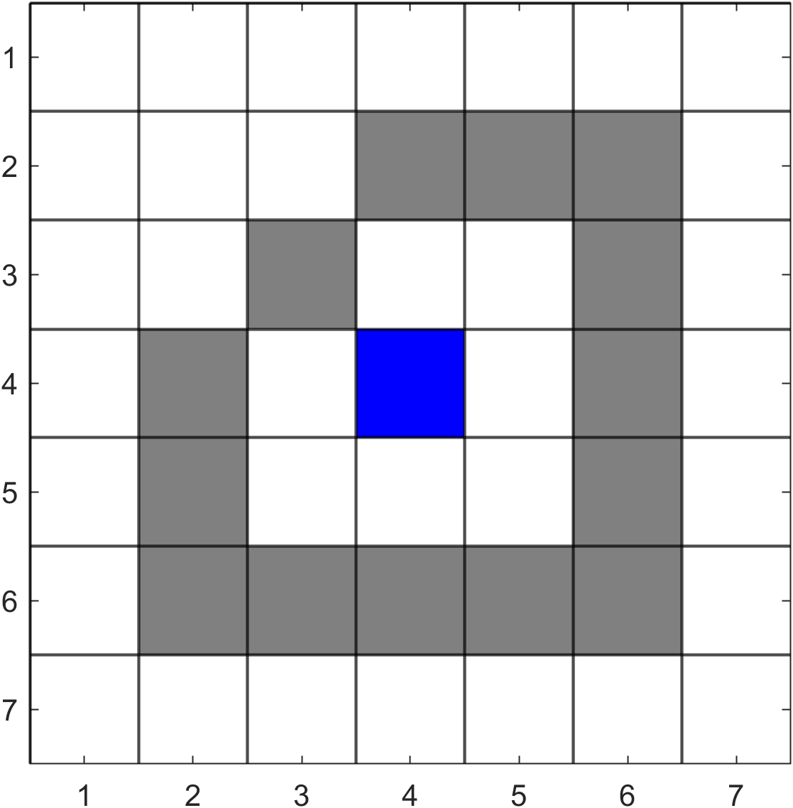
We now remove pixel \((4, 3)\) from \(Q\). Its colour is the same as the target colour so we fill this pixel and append the neighbouring pixels to the end of \(Q\).
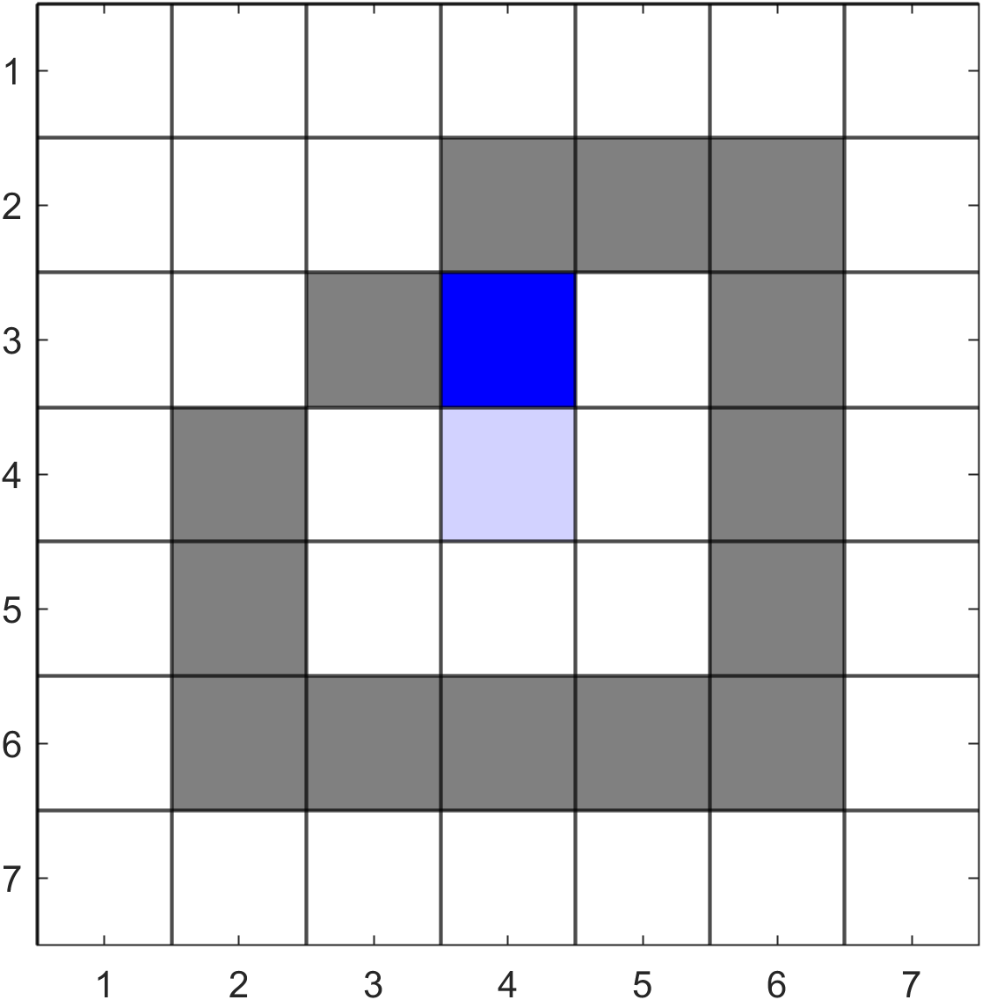
We now remove pixel \((4, 2)\) from \(Q\). Its colour is not the same as the target colour so we reject this pixel (as indicated by the red text) and remove the next last pixel in \(Q\) \((4, 4)\). This is also not the same as the target colour so is rejected and we remove the next last pixel \((3,3)\). This is also not the same as the target colour so is rejected and we remove the next last pixel \((5, 3)\). This is the same as the target colour so we fill this pixel and append the neighbouring pixels to the end of \(Q\).
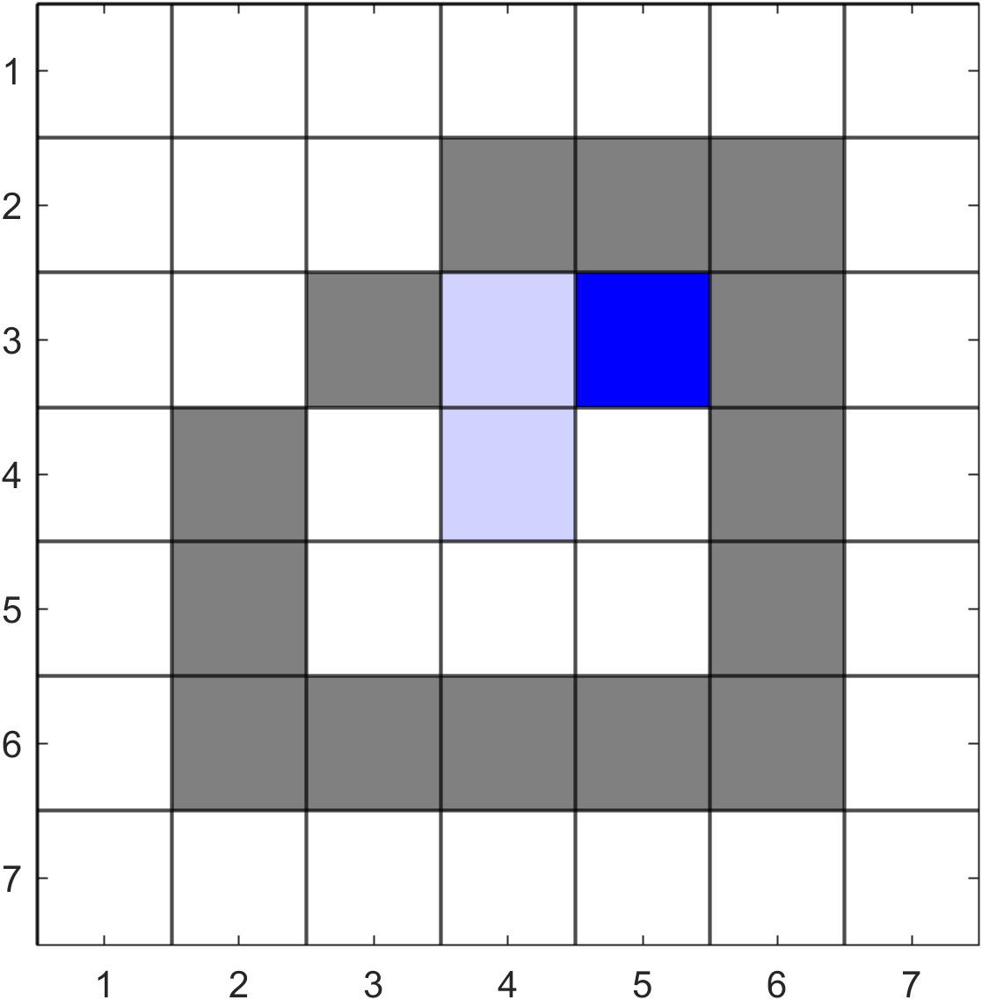
We proceed in the same way that results in the the following queue.
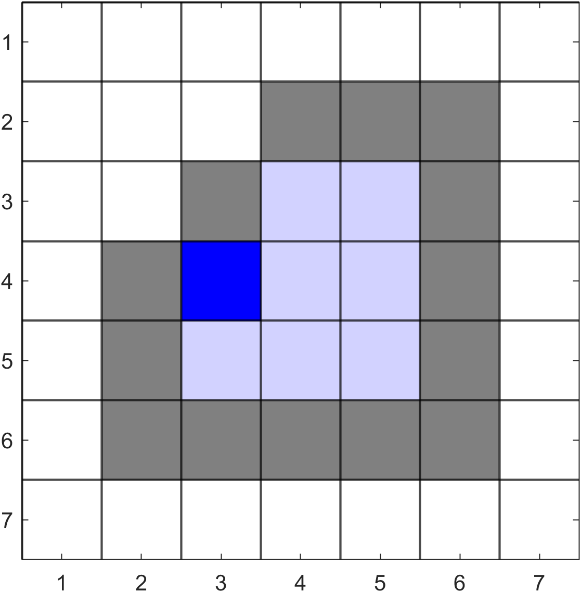
Use of the flood fill algorithm#
Since the flood fill algorithm uses adjacent pixels to the four compass directions to spread the fill colour across a polygon is cannot spread across tight corners. This can be desirable since if the width of the outline is a single pixel then the flood fill will not leak outside of the polygon. In practice the flood fill algorithm is too computationally expensive to be used for virtual worlds and is only really used in drawing applications to provide a filling tool.
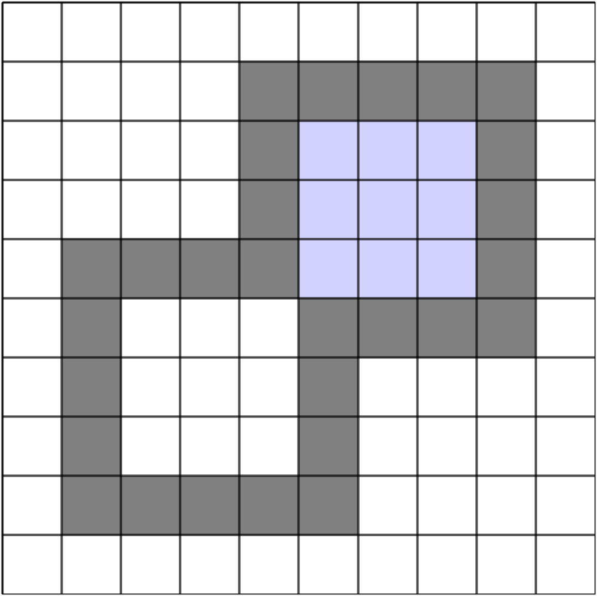
Fig. 101 The flood fill algorithm is blocked by tight corners.#
The scanline algorithm#
The scanline algorithm is a method of rendering a polygon without drawing the edges beforehand unlike the flood fill algorithm that requires pixels to be plotted to form an outline. Instead of testing pixels one by one, the scanline filling algorithm loops through horizontal rows of pixels, known as a scanline starting at the top of the raster and finishing at the bottom. If the scanline intersects with an edge of the polygon the intersection points, which are known as span extrema, are calculated and sorted into ascending order and all pixels between pairs of intersection points are filled.
Definition 28 (Scanline)
A horizontal row of pixels.
Definition 29 (Span extrema)
A pixel where a scanline intersects with the edge of a polygons.
Calculating the span extrema#
{kind=link}
Fig. 102 Calculating span extrema co-ordinates.#
Consider Fig. 102 where the co-ordinates of the span extrema on the left edge of a polygon are \((x_i, y_i)\) and \((x_{i+1}, y_{i+1})\). If \((x_i, y_i)\) are known then the next value \(y_{i+1}\) is easily calculated using \(y_{i+1} = y_i + 1\). The values of the \(x\) span extrema co-ordinates are calculated using the slope intercept equation of a line.
where \(y\) and \(x\) are the co-ordinates of a point on the line, \(m = (x_{\min} - x_{\max}) / (y_{\min} - y_{\max})\) is the gradient of the line and \(c\) is where the line intercepts the \(y\)-axis. Rearranging this to make \(x\) the subject gives
To derive an expression for calculating \(x_{i+1}\) we let \(x_{i+1} =x \) and rearrange equation (35) and substitute \(y_{i+1} = y_i + 1\)
Since \(x_i = \dfrac{1}{m} (y_i - c)\) then
So calculating the values of \(y_{i+1}\) and \(x_{i+1}\) is simply a matter of adding 1 to \(y_i\) and \(1/m\) to \(x_i\).
Edge tables#
We only want to perform the span extrema calculations on polygon edges that intersect a scanline, known as active edges and ignore the rest. To do this we use an Edge Table (ET) to store information for all edges of a polygon and an Active Edge Table (AET) that only contains information for the active edges. The information that is stored in the ET is the \(x\) co-ordinate of the current span extrema, \(1/m\), \(y_{\min}\) and \(y_{\max}\)
{kind=link}
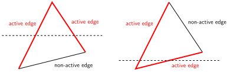
Fig. 103 As the scanline moves down the polygon different edges become active.#
To start with we initialise ET so that it contains all of edges of a polygon and the AET is empty. Then as we move down the scanlines some of the polygon edges will become active edges and some of the active edges will become non active (Fig. 103). Any edge in the ET that has \(y_{\min}=y\) has become active so are moved to the AET. The AET table contains \(x\), \(1/m\) and \(y_{\max}\) (we don’t need \(y_{\min}\) from now on).
{kind=link}
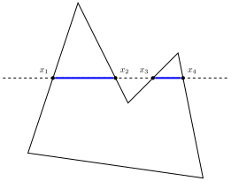
Fig. 104 The pixels between pairs of span extrema are filled.#
The \(x\) values in the AET contain the \(x\) co-ordinate of the span extrema. The AET is sorted in ascending order by the \(x\) values and then all pixels between pairs of span extrema are filled (Fig. 104). Once a scanline has been filled, any edge in the AET that has \(y_{\max} =y\) will become non-active and is removed from the AET. When both the ET and AET are empty the polygon has been drawn and the algorithm terminates.
Algorithm 11 (The scanline algorithm)
Inputs: A raster array, the pixel co-ordinates of the polygon vertices and the colour of the polygon
Outputs: A raster array
ET \(\gets \emptyset\) and AET \(\gets \emptyset\)
For each edge of the polygon add \([x, 1/m, y_{\min}, y_{\max}]\) to ET
\(y \gets 0\)
While ET or AET are not empty
Move edges in ET that have \(y_{\min} = y\) to AET
Sort AET by \(x\) in ascending order
Fill pixels between every pair of \(x\) co-ordinates (rounding the left co-ordinate up and the right co-ordinate down) with the colour of the polygon
Remove edges in AET that have \(y_{\max} = y\)
Add \(1/m\) to \(x\) to the edges in AET
\(y \gets y + 1\)
return \(R\)
Note
The scanline algorithm presented here uses floating point numbers for \(1/m\) and the span extrema co-ordinates. In practice the scanline algorithm uses a method similar to Bresenham’s algorithm so that we are only dealing with integer numbers.
Example 42
Use the scanline algorithm to draw the polygon defined below
{kind=link}
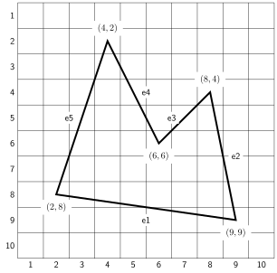
Solution
The edge table ET is
ET
x 1/m ymin ymax
e1 | 2 | 7 | 8 | 9 |
e2 | 8 | 0.2 | 4 | 9 |
e3 | 8 | -1 | 4 | 6 |
e4 | 4 | 0.5 | 2 | 6 |
e5 | 4 | -0.33 | 2 | 8 |
Starting with the minimum \(y\) co-ordinate which is \(y=2\) we have edges e4 and e5 with \(y_{\min} = 2\) so we move these to the AET.
ET AET
x 1/m ymin ymax x 1/m ymax
e1 | 2 | 7 | 8 | 9 | e4 | 4 | 0.5 | 6 |
e2 | 8 | 0.2 | 4 | 9 | e5 | 4 | -0.33 | 8 |
e3 | 8 | -1 | 4 | 6 |
AET is already in ascending order by \(x\) so we fill pixel \((4,2)\).
{kind=link}
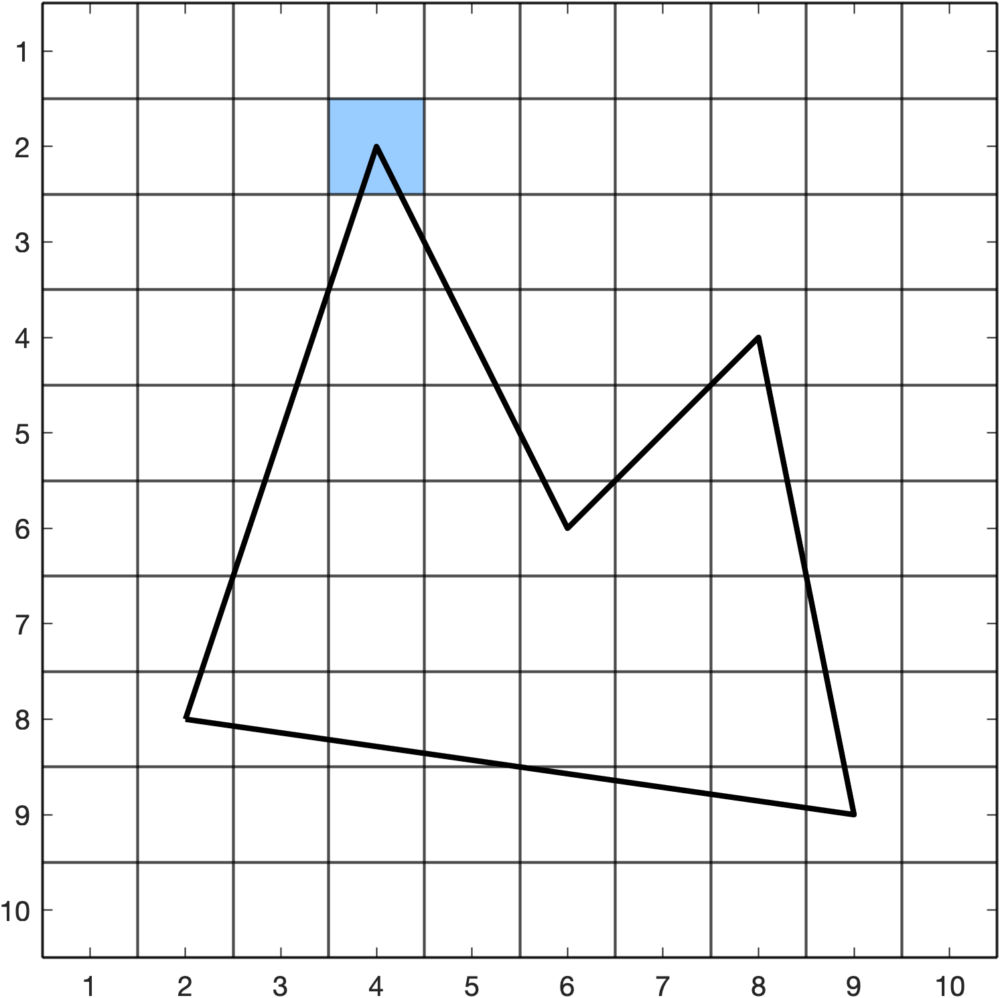
We increment \(y = 2 + 1 = 3\) and add \(1/m\) to the \(x\) values in AET.
ET AET
x 1/m ymin ymax x 1/m ymax
e1 | 2 | 7 | 8 | 9 | e4 | 4.5 | 0.5 | 6 |
e2 | 8 | 0.2 | 4 | 9 | e5 | 3.67 | -0.33 | 8 |
e3 | 8 | -1 | 4 | 6 |
None of the edges in ET have \(y_{\min} = 3\) and none of the edges in AET have \(y_{\max} = 3\) so ET and AET are unchanged. Sort AET by \(x\) value.
ET AET
x 1/m ymin ymax x 1/m ymax
e1 | 2 | 7 | 8 | 9 | e5 | 3.67 | -0.33 | 8 |
e2 | 8 | 0.2 | 4 | 9 | e4 | 4.5 | 0.5 | 6 |
e3 | 8 | -1 | 4 | 6 |
We round the left-hand span extrema co-ordinate up and the right-hand coordinate down so we fill pixel \((4,3)\).
{kind=link}
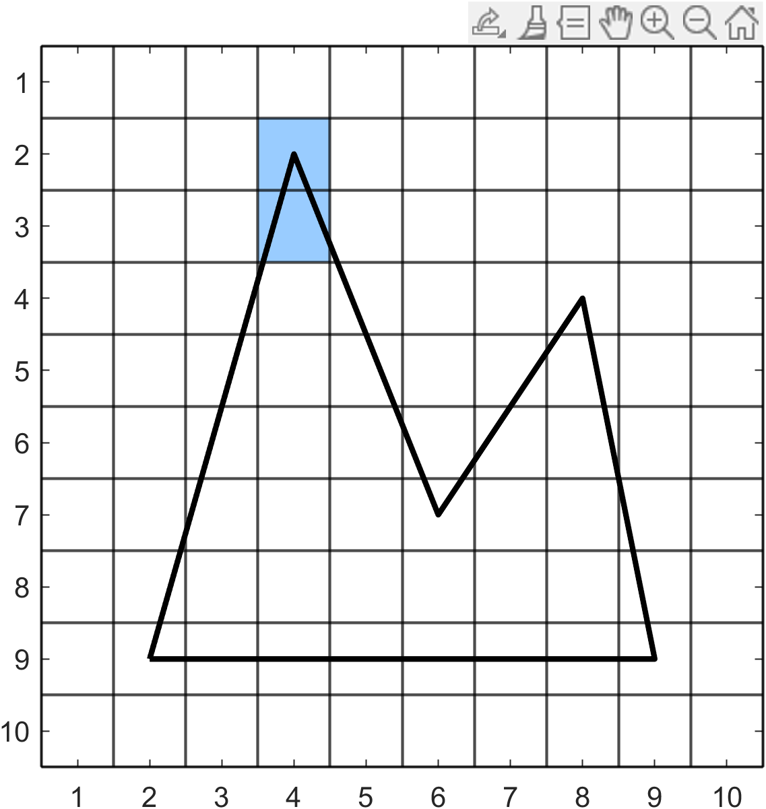
Increment \(y = 3 + 1 = 4\) and add \(1/m\) to the \(x\) values in AET.
ET AET
x 1/m ymin ymax x 1/m ymax
e1 | 2 | 7 | 8 | 9 | e5 | 3.33 | -0.33 | 8 |
e2 | 8 | 0.2 | 4 | 9 | e4 | 5 | 0.5 | 6 |
e3 | 8 | -1 | 4 | 6 |
Edges e2 and e3 have \(y_{\min} = 4\) so we move these to AET.
ET AET
x 1/m ymin ymax x 1/m ymax
e1 | 2 | 7 | 8 | 9 | e5 | 3.33 | -0.33 | 8 |
e4 | 5 | 0.5 | 6 |
e2 | 8 | 0.2 | 9 |
e3 | 8 | -1 | 6 |
None of the edges in AET have \(y_{\max} = 4\) so we fill pixels \((4,4) \to (5,4)\) and \((8,4)\).
{kind=link}
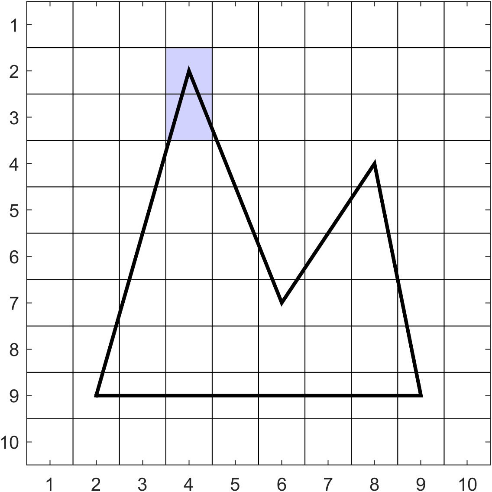
Increment \(y = 4 + 1 = 5\) and add \(1/m\) to the \(x\) values in AET
ET AET
x 1/m ymin ymax x 1/m ymax
e1 | 2 | 7 | 8 | 9 | e5 | 3 | -0.33 | 8 |
e4 | 5.5 | 0.5 | 6 |
e2 | 8.2 | 0.2 | 9 |
e3 | 7 | -1 | 6 |
None of the edges in ET have \(y_{\min} = 5\) and none of the edges in AET have \(y_{\max} = 5\) so ET and AET are unchanged. Sort AET by \(x\) value.
ET AET
x 1/m ymin ymax x 1/m ymax
e1 | 2 | 7 | 8 | 9 | e5 | 3 | -0.33 | 8 |
e4 | 5.5 | 0.5 | 6 |
e3 | 7 | -1 | 6 |
e2 | 8.2 | 0.2 | 9 |
Fill pixels \((3,5) \to (5,5)\) and \((7,5) \to (8,5)\)
{kind=link}
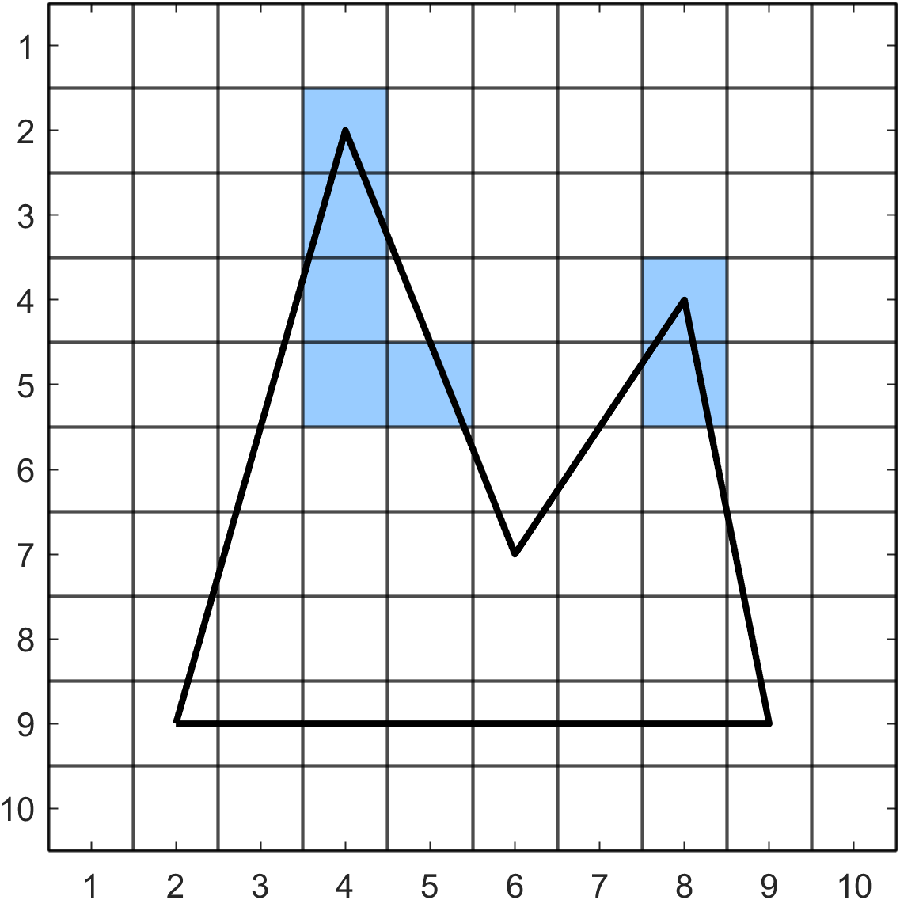
Increment \(y = 5 + 1 = 6\) and add \(1/m\) to the \(x\) values in AET
ET AET
x 1/m ymin ymax x 1/m ymax
e1 | 2 | 7 | 8 | 9 | e5 | 2.67 | -0.33 | 8 |
e4 | 6 | 0.5 | 6 |
e3 | 6 | -1 | 6 |
e2 | 8.4 | 0.2 | 9 |
None of the edges in ET have \(y_{\min} = 5\) but edge e3 and e4 in AET have \(y_{\max} = 5\) so we remove these from AET.
ET AET
x 1/m ymin ymax x 1/m ymax
e1 | 2 | 7 | 8 | 9 | e5 | 2.67 | -0.33 | 8 |
e2 | 8.4 | 0.2 | 9 |
Fill pixels \((3,6) \to (8,6)\).
{kind=link}
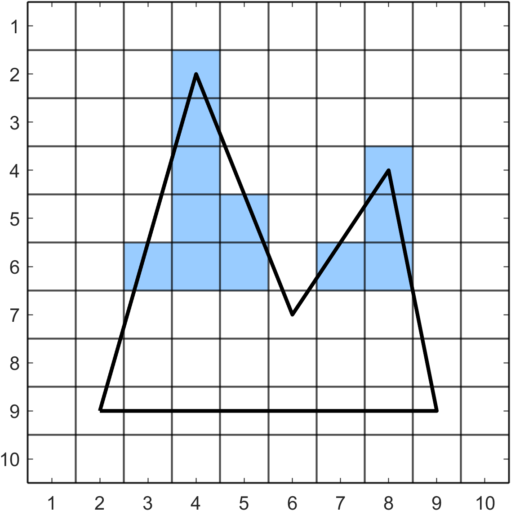
Increment \(y = 6 + 1 = 7\) and add \(1/m\) to the \(x\) values in AET
ET AET
x 1/m ymin ymax x 1/m ymax
e1 | 2 | 7 | 8 | 9 | e5 | 2.33 | -0.33 | 8 |
e2 | 8.6 | 0.2 | 9 |
None of the edges in ET have \(y_{\min} = 5\) and none of the edges in AET have \(y_{\max} = 5\) so ET and AET are unchanged. Fill pixels \((3,7) \to (8,7)\).
{kind=link}
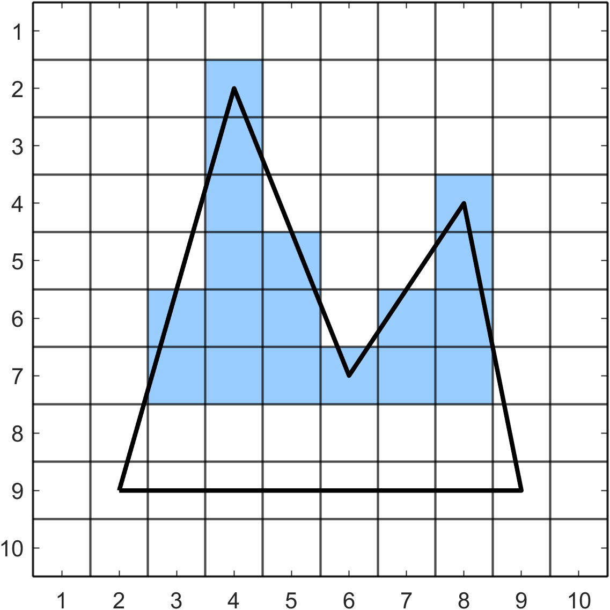
Increment \(y = 7 + 1 = 8\) and add \(1/m\) to the \(x\) values in AET
ET AET
x 1/m ymin ymax x 1/m ymax
e1 | 2 | 7 | 8 | 9 | e5 | 2 | -0.33 | 8 |
e2 | 8.8 | 0.2 | 9 |
Edge e1 in ET has \(y_{\min} = 8\) so is moved to AET and edge e5 in AET has \(y_{\max} = 8\) so is removed from AET.
AET
x 1/m ymax
e2 | 8.8 | 0.2 | 9 |
e1 | 2 | 7 | 9 |
Sort AET by \(x\) values
AET
x 1/m ymax
e1 | 2 | 7 | 9 |
e2 | 8.8 | 0.2 | 9 |
Fill pixels \((2,8) \to (8,8)\).
{kind=link}
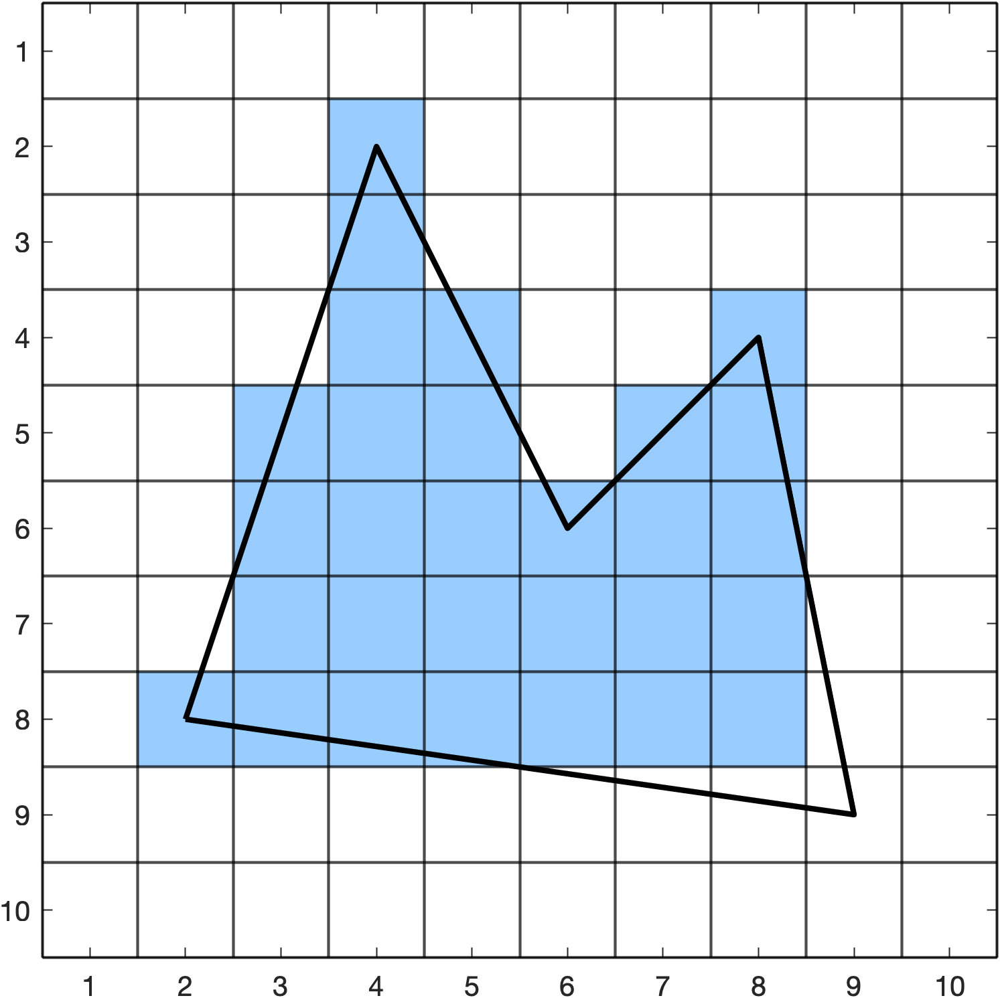
Increment \(y = 8 + 1 = 9\) and add \(1/m\) to the \(x\) values in AET
AET
x 1/m ymax
e1 | 9 | 7 | 9 |
e2 | 9 | 0.2 | 9 |
Fill pixel \((9,9)\).
{kind=link}
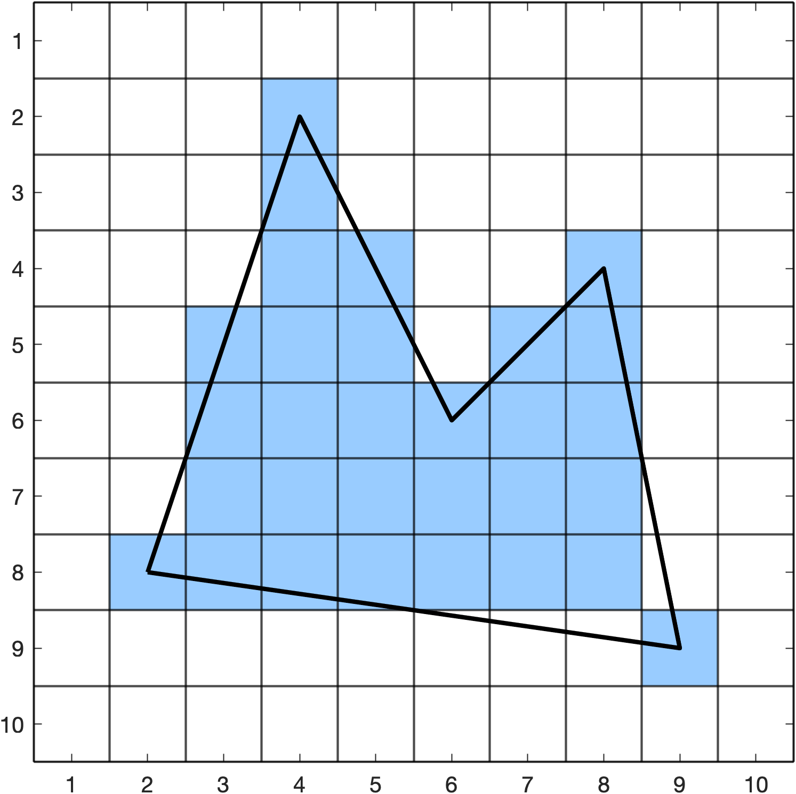
Both edges e1 and e2 have \(y_{\max} = 9\) so are removed from AET. ET and AET are now empty so the algorithm terminates.